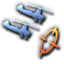

突破：2.2 (+0.2)
陆军学说
原页面：Land doctrine
关于 1.17 之前的学说系统，请参见本页的旧版本。
陆军学说让国家能够专精其军队进行land warfare的方式。陆军学说分为大学说与子学说。可以在军官团中使用 陆军经验查看并解锁它们。共有四个互斥的大学说，当子学说精通后，它们会为每条轨道提供独特的里程碑。
陆军经验查看并解锁它们。共有四个互斥的大学说，当子学说精通后，它们会为每条轨道提供独特的里程碑。
总体学说
大学说代表一支军队的总体学说。解锁时会提供加成并启用一个Tactic，精通后还会为每条轨道提供独特的里程碑。同时只能启用一个大学说。更换大学说会重置陆军目录中的所有精通。
 机动战争
打他们一个措手不及——机动战学说力图通过积极主动的机动来抢占先机、扰乱敌军，从而打破第一次世界大战式的堑壕僵局。
|
 优势火力
送炮弹，不送人——优势火力强调以铺天盖地的密集火力为机动部队开辟道路，使其得以推进并夺取领土。
|
大规模作战计划
只要有充分准备，没有障碍不可逾越——大军团作战计划的特点是各兵种无论进攻还是防御都进行耐心而细致的准备。
|
 大规模突击
我们甘愿牺牲的决心保证了胜利——大规模突击着眼于集中数量优势，在选定的时间与地点强行打开突破口。
|
学说路线
学说轨道分为四个类别：步兵、炮兵与战斗支援、装甲、作战。每个类别都有一套在各大学说之间共享的子学说。精通用于解锁子学说内的里程碑，从而提供更多加成。当特定单位参与行动时，每条轨道都会获得精通，训练时则以较低速率（10%）获得。如果未选择子学说，最多可储备 200 点精通（按后续获取量的 25% 存入储备）。


当某条轨道精通后，会解锁该轨道的大学说里程碑。其中一个里程碑会增加旅规模，而每个里程碑（决战计划作战除外）都会启用一个Tactic。
| 总体学说 | 步兵 | 火炮与战斗支援 | 装甲 | 行动 |
|---|---|---|---|---|
| 机动战争 |
|
|
|
|
| 优势火力 |
|
|
| |
 大规模作战计划 大规模作战计划 |
|
|
| |
| 大规模突击 |
|
|
|
|
| 学说路线 | Multiplier | 获得精通度的来源： |
|---|---|---|
| 步兵 | 1.0× | 所有步兵与摩托化/机械化 |
| 火炮与战斗支援 | 10.0× | 一线火炮、支援火炮、支援连 |
| 装甲 | 4.0× | 装甲车、坦克与装甲变体 |
| 行动 | 0.7× | 所有步兵与摩托化/机械化、一线火炮、支援火炮、坦克与装甲变体 |
Subdoctrines
子学说让军队能够专精于不同类型的战斗。选择子学说时会提供一些加成，当每条学说轨道积累足够的精通后还会解锁额外加成。每条学说轨道同时只能启用一个子学说。大学说不影响哪些子学说可用。除非另有说明，子学说内的每个里程碑都需要 100 点精通（累计）。

步兵
| Subdoctrine | 100 现代化骑兵 |
200 渗透 |
300 先发制人作战 |
400 下放权力 |
500 机动战 |
|---|---|---|---|---|---|
机动步兵
让我们的步兵着眼于机动性，以保持推进速度，避免陷入代价高昂的阵地消耗战。
|
突破：2.4 (+0.4) |
|
|
软攻：3.3 (+0.3) |
|
| Subdoctrine | 100 临时战斗阵地 |
200 前哨线 |
300 据点网络 |
400 交叉火力网 |
500 步兵工兵训练 |
防御姿态
在训练与学说上强调防御战术，旨在顽固据守阵地，给进攻方造成伤亡并迟滞其行动。
|
|
防御：22 (+2) |
|
软攻：3.3 (+0.3)
|
|
| Subdoctrine | 100 连夜构筑工事 |
200 灵活的师级编制结构 |
300 部队知识共享 |
400 宽正面攻势 |
500 摩托化倡议 |
大兵团战术
如果我们能掌握在狭窄正面上集中用兵的本领，就能在主攻方向上形成局部优势，压垮敌人并打开突破口。
|
|
|
|
软攻：3.3 (+0.3)
|
突破：2.2 (+0.2) 软攻：3.3 (+0.3) 软攻: 6.6 (+0.6) 软攻: 9.9 (+0.9) 软攻: 13.2 (+1.2)
|
| Subdoctrine | 100 低层级火力支援 |
200 渗透 |
300 步兵前沿观察员训练 |
400 侦察引导 |
500 突击支队 |
突击步兵
以合成兵种的方式组织陆军作战，将建制内火力支援力量一直整合到最小的战术单位。
|
|
|
|
||
| Subdoctrine | 100 龙骑兵传统 |
200 团属侦察兵 |
300 反机械化骑兵集群 |
400 战争之兽 |
500 拖曳式战斗支援 |
 乘马步兵
软攻：3.3 (+0.3) 突破：2.2 (+0.2) 突破: 3.3 (+0.3) 突破: 4.4 (+0.4) 突破: 5.5 (+0.5)
要让我们的骑兵跟上 20 世纪，就需要在乘马状态下具备越野作战机动能力，并在下马作战时得到快速、现代的重武器支援。
|
防御：22 (+2) 突破：2.4 (+0.4) 突破: 3.6 (+0.6) 突破: 4.8 (+0.8) 突破: 6 (+1) |
硬攻：0.6 (+0.1) 穿透：1.2 (+0.2) 穿甲: 4.8 (+0.8) 穿甲: 6 (+1) 穿甲: 12 (+2) |
|
|
|
| Subdoctrine | 100 孤立战斗单位 |
200 分散部队协调 |
300 严格训练制度 |
400 战场情报搜集 |
500 协同突击 |
个人卓越
人人皆皇帝：我们的士兵必须能够独立承担艰巨而严苛的任务，并始终扛起自己的那份重担。如何训练他们，对我们在前线能否取胜至关重要。
|
|
|
|
|
突破：2.2 (+0.2) 软攻：3.3 (+0.3) 软攻: 6.6 (+0.6) 软攻: 9.9 (+0.9) 软攻: 13.2 (+1.2)
|
| Subdoctrine | 100 抽签征兵 |
200 游击团 |
300 临时军官小组 |
400 全民动员 |
500 标准化努力 |
Irregulars
防御：22 (+2) 一种非对称的步兵作战方式，避免与优势兵力正面交锋，转而运用伏击、误导和袭扰等游击战术来消磨敌人的决心。
|
|
防御：22 (+2) |
突破：2.2 (+0.2) 软攻：3.3 (+0.3) 软攻: 6.6 (+0.6) 软攻: 9.9 (+0.9) 软攻: 13.2 (+1.2) |
|
软攻：3.3 (+0.3) |
| Subdoctrine | 50 革命根据地 |
100 歼敌优先于占领土地 |
200 快速决断攻势作战 |
250 决定因素是人而非物 | |
 人民民兵
软攻：3.3 (+0.3) 防御：24 (+4) 防御: 26.4 (+4.4) 防御: 33.6 (+5.6) 防御: 40.8 (+6.8) 人民抵抗的意志一旦由国家动员并加以引导，就必将保证我们最终战胜帝国主义与反革命。
|
防御：22 (+2)
|
|
软攻：3.3 (+0.3) |
||
| Subdoctrine | 100 锯齿形战壕 |
200 交通壕 |
300 徐进弹幕 |
400 顶部掩体 |
500 堡垒网络 |
 一战步兵
防御：22 (+2) 一种有条不紊的步兵作战方式，特点是发动目标有限的进攻，随后迅速构筑工事，顽强守住已夺占的阵地。
|
|
防御：22 (+2) |
|
防御：21 (+1) 可靠性：94.5% (+4.5%) 可靠性: 94.5% (+4.5%) 可靠性: 94.5% (+4.5%) 可靠性: 84% (+4%) |
|
火炮与战斗支援
| Subdoctrine | 100 预判射击 |
200 预设炮位 |
300 炮兵连就地警戒 |
400 集中式防空支援 |
500 侧射火力阵地 |
|---|---|---|---|---|---|
火力集中
防御：10.5 (+0.5) 通过集中统辖火力支援力量，我军可以把火力汇聚于关键地点，而不是零敲碎打地分散消耗掉。
|
防御：10.5 (+0.5) |
|
突破：6.6 (+0.6) 软攻：26.25 (+1.25) 软攻: 31.5 (+1.5) 软攻: 37.4 (+1.7) |
对空攻击：20.9 (+1.9) |
硬攻：22 (+2) 穿透：66 (+6) 穿甲: 99 (+9) 穿甲: 137.5 (+12.5)
软攻：27.5 (+2.5)
软攻：33 (+3) |
| Subdoctrine | 100 反坦克炮阵 |
200 炮位轮换 |
300 弱点研究 |
400 进攻部署 |
500 直射火力摧毁地堡 |
反坦克前线
在各战术层级统一反坦克防御方式，掩护友军突破的侧翼，并将敌军装甲攻势引入预先规划好的杀伤区。
|
穿透：66 (+6)
|
防御：4.8 (+0.8) |
软攻：4.8 (+0.8) 硬攻：22 (+2) 穿透：66 (+6) 硬攻: 24.2 (+2.2) 穿甲: 99 (+9) 硬攻: 33 (+3) 穿甲: 137.5 (+12.5) |
突破：2.4 (+0.4) 穿透：72 (+12) |
软攻：4.8 (+0.8) 硬攻：24 (+4) 硬攻: 26.4 (+4.4) 硬攻: 36 (+6) |
| Subdoctrine | 100 部署演练 |
200 反炮兵任务 |
300 装甲前沿观察车 |
400 快速卸架 |
500 广泛分散的炮兵连 |
 飞行炮兵
软攻：27.5 (+2.5) 全军上下共同努力提高支援兵种的机动性，使其能够跟上摩托化部队的快速推进，并迅速投入战斗提供支援。
|
|
|
突破：6.3 (+0.3) |
|
|
| Subdoctrine | 100 直升机机降观察员 |
200 勤务与支援 |
300 救援联络官 |
400 运输突击 |
500 干预部队 |
|
 空中骑兵
直升机为陆战带来了引入第三个维度——垂直维度的革命性可能。我们可以调整陆军编制以利用这一新途径，获得最大的机动性与突然性。
|
|
|
|
|
|
| Subdoctrine | 100 建制内摩托化补给 |
200 远程侦察 |
300 机动作战部署 |
400 行进间射击 |
500 纵深侦察重点 |
|
在广泛摩托化支撑下的合成兵种作战方式，让我们能用侦察部队搜寻敌人，再用机动重武器迅速将其摧毁。
|
最大速度：11 公里/小时 (+1) |
|
软攻：26.25 (+1.25) |
突破：14.4 (+2.4)
|
|
| Subdoctrine | 100 机动火力指挥中心 |
200 准时命中火力任务 |
300 全地形机动性 |
400 多用途支援车辆 |
500 打了就跑 |
 自行火炮支援
尽可能为陆军的重型支援武器提供履带式机动能力与防护：这就是未来的方向。
|
|
|
|
||
| Subdoctrine | 100 要塞破坏者 |
200 改进的运输准备 |
300 预先计算射击诸元 |
400 先进射击修正 |
500 机动炮兵指挥 |
攻城炮兵
没有任何固定工事能长期抵挡战列舰口径炮弹的钢铁之雨。
|
|
|
防御：14.4 (+2.4) |
软攻：26.25 (+1.25)
|
|
| Subdoctrine | 100 快速火力通道清理 |
200 工兵野战技能 |
300 工兵挖掘的火炮掩体 |
400 烟雾发射器训练 |
500 火焰与炸药包 |
野战工程
军事工程兵的职责是架设桥梁、布设地雷，以及摧毁敌方的同类工事。有了合适的装备与训练，再加上甘愿多流汗以减少流血的决心，我们便能主宰现代战场。
|
|
|

装甲
| Subdoctrine | 100 主攻方向 |
200 突破战果扩张 |
300 地方预备队 |
400 绕过坚固据点 |
500 侧翼保护 |
|---|---|---|---|---|---|
装甲矛头
坦克提供了创造运动战而非单纯消耗战的机会。我们的学说应强调迅速扩张突破口，以包围并歼灭敌人。
|
|
|
|
||
| Subdoctrine | 100 突击碾压 |
200 装甲大队 |
300 维护规程 |
400 燃料配给 |
500 机动装甲支撑点 |
装甲步兵支援
凭借火力与防护，坦克能够迅速摧毁机枪以及其他妨碍步兵前进的武器。坦克与步兵的协同必须天衣无缝。
|
|
|
|
突破：2.1 (+0.1) |
|
| Subdoctrine | 100 陆军机械化推进 |
200 机械化浪潮 |
300 坦克搭载步兵 |
400 简约后勤 |
500 连续攻势 |
精简部署
只有当包括坦克在内的所有兵种集中起来，把打击力汇聚于决定性地点时，才能取得战略层面的进攻成果。
|
|
|
|
|
|
| Subdoctrine | 100 战场出租车 |
200 火力下推进 |
300 履带式战斗支援 |
400 联合反装甲 |
500 坦克对坦克交战 |
机动防御
装甲部队不仅在进攻中有用，在防御中同样如此。凭借其机动性，它们可以迅速占领有利的防御地形，或前出至阵位以反制敌军突破。
|
|
|
|
|
|
| Subdoctrine | 100 巡洋坦克 |
200 摩托化治安部队 |
300 以速度代装甲 |
400 战斗侦察 |
500 外部挂载 |
 由快速轻型坦克和装甲车支援的机械化部队，可以试探敌军薄弱之处，打击其最脆弱的地方。
|
|
|
突破：13.2 (+1.2) 软攻：6.6 (+0.6) 最大速度：9.45 公里/小时 (+0.45) 软攻: 14.3 (+1.3) 最大速度: 12.6 公里/小时 (+0.6) 软攻: 17.6 (+1.6) 最大速度: 15.75 公里/小时 (+0.75) 软攻: 13.2 (+1.2) 最大速度: 16.8 公里/小时 (+0.8)
突破：2.1 (+0.1) 最大速度：8.4 公里/小时 (+0.4) |
||
| Subdoctrine | 100 机动反坦克预备队 |
200 建制内战斗工兵排 |
300 快速反击 |
400 独立反击 |
500 无线电引导的突破遏制 |
 坦克歼击部队
面对敌军大规模的装甲威胁时，我们不能指望第一线防御总能挡住敌人。以反坦克部队实施伏击的纵深防御至关重要。
|
硬攻：22 (+2) 穿透：66 (+6) 穿甲: 99 (+9) 穿甲: 137.5 (+12.5) |
|
|
|
行动
| Subdoctrine | 100 基层授权 |
200 灵活指挥 |
300 合成兵种战斗群 |
400 进攻姿态 |
500 控制区责任 |
|---|---|---|---|---|---|
任务式战术
我们的指挥官不应是机械执行命令的傀儡。他们必须灵活理解所受领的任务，如果严格执行命令反而不利于达成目标，就应当有所变通。胜利比盲目服从更重要。
|
|
|
|
突破：2.2 (+0.2) |
|
| Subdoctrine | 100 破坏小组 |
200 巩固包围圈 |
300 战壕蜷缩 |
400 补给品回收 |
500 最后攻势 |
拼死防御
当我们退无可退、国家存亡悬于一线时，唯一的选择就是全体民众进行艰苦而狂热的抵抗，把每一片田野、每一条街道和每一座城镇都变成战场。
|
|
防御：22 (+2) |
|
|
|
| Subdoctrine | 100 渗透突击 |
200 夜间进攻 |
300 自给自足的渗透部队 |
400 地形与态势评估 |
500 纵深渗透 |
 渗透战术
与其在敌军防线最强的地段硬碰硬，我们应如水般绕过它们，保持进攻势头，并以包围的威胁迫使敌人撤退。
|
|
|
|
|
|
| Subdoctrine | 100 中央计划 |
200 牵制性进攻 |
300 合成兵种整合 |
400 前沿指挥所 |
500 指挥控制通信情报（C3I） |
大突击
汲取第一次世界大战中用鲜血换来的教训，我们将在战前筹划中采取审慎而有条不紊的方式。待到一切优势都被充分利用，我们便如雪崩般扑向敌人。
|
|
|
|
|
|
| Subdoctrine | 100 交替跃进掩护 |
200 战役预备队 |
300 战略欺骗 |
400 突破优先 |
500 作战攻势势头 |
大纵深作战
现代武器的射程与打击力，使我们能够动用手中一切武器同时打击敌军防御体系的整个纵深，从而将其击破。
|
|
|
|||
| Subdoctrine | 100 敌人会为我们提供补给 |
200 激励支援 |
300 焦土政策 |
400 城市战战术 |
500 捍卫既得力量 |
 游击战
防御：24 (+4) 软攻：3.3 (+0.3) 软攻: 6.6 (+0.6) 软攻: 9.9 (+0.9) 软攻: 13.2 (+1.2) 通过对敌军交通线不断发动低强度袭击来消耗优势之敌，消磨其继续作战的意志。避免大规模正规会战，以保全我们自身有限的兵力。
|
|
|
|
|
|
| Subdoctrine | 100 派出侦察兵 |
200 前进火力基地 |
300 动态火力控制 |
400 团级战斗队 |
500 震慑行动 |
快速压制
软攻：3.3 (+0.3)
软攻：27.5 (+2.5) 对敌人确立全频谱优势，使其进一步抵抗在生理上和心理上都成为不可能。
|
|
|
|
|
软攻：3.3 (+0.3) 硬攻：0.55 (+0.05) 硬攻: 1.1 (+0.1) 硬攻: 1.65 (+0.15) 硬攻: 2.2 (+0.2) |
| Subdoctrine | 100 滩头警戒 |
200 登陆作战 |
300 岸轰火力引导小组 |
400 重视补给 |
500 有序撤退规程 |
 远征作战
若无法投入战斗，再强大的战斗力也毫无意义。我们应在组织上强调力量投射能力，以服务于我们的战略目标。
|
|
|
|
|
|
| Subdoctrine | 100 伪装纪律 |
200 强固后勤 |
300 局部防空 |
400 分散队形 |
500 独立作战 |
分散作战
当天空属于敌人时，我们的军队绝不能轻易成为靶子。疏散的队形、强化的后勤以及密集的防空火力，让我们在无法争夺制空权的地方依然能继续作战。
|
|
|
|
|
突破：2.2 (+0.2) |
研究学说
每个大学说和子学说的解锁基础花费为 100 或 50  陆军经验。该花费可能受到精神、顾问以及来自国策、事件或决议的特殊加成修正。
陆军经验。该花费可能受到精神、顾问以及来自国策、事件或决议的特殊加成修正。
随时都可以更换学说，但解锁不同学说时，先前已解锁学说的所有加成都将失去，而更换大学说会重置所有轨道。选择不同的学说树时，任何学说专属的军官团精神也会自动切换为其他精神。
精通
 精通是推动子学说进展的资源。每个子学说最多有五个奖励（人民民兵为四个），默认每个奖励都需要 100 点精通才能激活。当相关类别的单位参与战斗、执行任务或训练时，每条轨道都会获得精通（训练按 10% 的速率计入）。
精通是推动子学说进展的资源。每个子学说最多有五个奖励（人民民兵为四个），默认每个奖励都需要 100 点精通才能激活。当相关类别的单位参与战斗、执行任务或训练时，每条轨道都会获得精通（训练按 10% 的速率计入）。
精通受以下因素影响：
- 精通获取目标人力：当参与人力超过 100,000 后开始出现收益递减。
- 每月精通获取上限：每条轨道每月上限为 50。
- 精通储备：若某条轨道没有启用子学说，或其子学说已完全精通，则后续获取量的 25% 会存入储备，上限为 200。
- 武官：会转交驻在国各轨道中由单位获得的精通获取量的 10%。
- 战区指挥官麾下的战区指挥官：单位每点技能（攻击 + 防御）会将其获取量的 +1% 转交给指挥官所属国家。
- 阵营学说共享：启用时提供 10 点基础月度精通，每名战区指挥官再 +2。
各轨道精通倍率：
- 步兵 — 1.0×
- 炮兵与战斗支援 — 10.0×
- 装甲 — 4.0×
- 作战 — 0.7×
初始学说
部分国家在游戏开始时已预选并解锁一项陆军学说。它们仍可照常更换学说，不过长期来看，坚持使用起始学说所消耗的 陆军经验可能更少。
陆军经验可能更少。
| 学说 | 国家 | 国家（仅 1939 年） |
|---|---|---|
| ||
| 大规模作战计划 | ||
参考资料
战争
| 政治 | 意识形态 • 阵营 • 国策 • 理念 • 政府 • 傀儡国 • 流亡政府 • 外交 • 世界紧张度 • 内战 • 占领 • 力量均势 |
| 生产 | 贸易 • 生产 • 建造 • 装备 • 燃料 • 军工组织 • 国际市场 |
| 科研与科技 | 科研 • 步兵科技 • 支援连科技 • 装甲科技（也包括 未拥有绝不后退）• 火炮科技 • 陆军学说 • 特种部队学说 • 海军科技（也包括 未拥有全民持枪）• Naval support科技 • 海军学说 • 空军科技（也包括 未拥有以血盟誓）• 空军学说 • Engineering科技 • Industry科技 • 特殊项目 • 科学家 |
| 军事与战争 | 战争 • 和平会议 • 陆军单位 • 陆战 • 师编制设计 • 坦克设计 • 陆军编制器 • 集团军 • 指挥官 • 作战计划 • 战斗战术 • 舰船 • 舰船设计（伦敦海军条约）• 海战 • 飞机设计 • 空战 • 经验 • 军官团 • 损耗与事故 • 后勤 • 人力 • 核弹 • 突袭 |
| 间谍活动 | 情报 • 情报机构 • 特工 • 任务 • 行动 |
| 地图 | 地图 • 省份 • 地形 • 天气 • 州 |
| 事件与决议 | 事件 • 决议 |